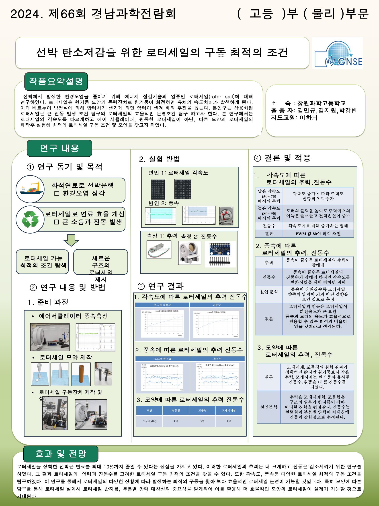

Magnus Effect Based Ship Propulsion Optimization Research
← Back to Main PageMaritime industries continuously seek methods to reduce fuel consumption and improve propulsion efficiency. Rotor sails provide an eco-friendly propulsion technology using the Magnus effect generated by rotating cylinders. This project investigates how operating conditions such as angular velocity, wind speed, and geometry affect rotor sail efficiency and vibration reduction.
• Rotor angular velocity control
• Wind speed variation experiments
• Rotor geometry comparison
• Observation of vibration characteristics
• Magnus Effect analysis
• Fluid dynamics interpretation
• Force and thrust efficiency comparison
• Experimental data observation

This study suggests that rotor sails may contribute
to environmentally sustainable marine transportation.
Potential applications include:
• Eco-friendly marine propulsion systems
• Fuel consumption reduction technologies
• Sustainable shipping engineering
• Marine fluid dynamics optimization
• School STEAM R&E Project
• Fluid dynamics and Magnus effect references
• Rotor sail engineering studies
• Changwon Science High School research activities